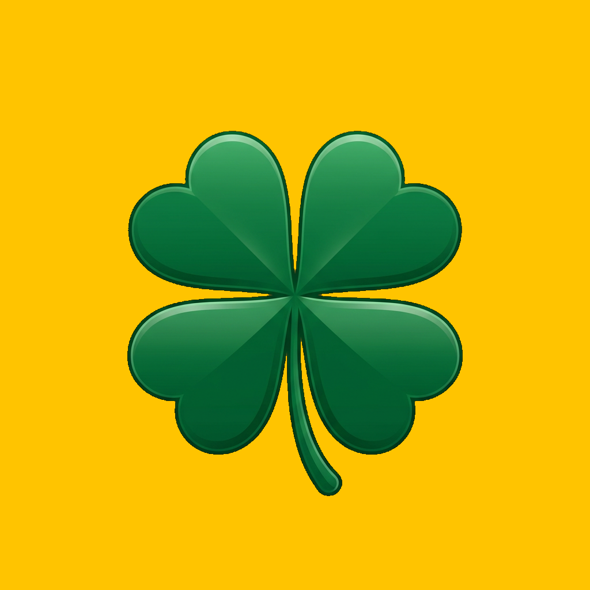

MOBILE DEV WORKSPACE
Build something lucky.
Code, inspect, archive, and commit from one focused Android workspace.
Offline-firstWeb DevToolsGit ready
GET STARTED
＋New fileCtrl+N
▣Open fileCtrl+O
▰Open folder
CONFIGURE
⚙Settings
◉Lucky Clover theme
⌘Built-in plugins
CONNECT
WebsiteGitHubTelegramYouTubeFacebookWhatsApp